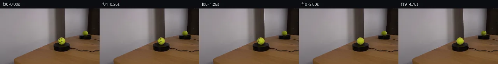

![首帧]()

Round 00
2026-11-05T12:24:54.786120+00:00像素候选变化代码 +157/−0inspection 更新
pixels 8e707caa7e37b43b · code 80688f68ba0d95cc
查看本轮 generate.py 真实 diff
--- previous/generate.py
+++ current/generate.py
@@ -0,0 +1,157 @@
+"""Local source-pixel spherical texture rotation for the locked-off scene."""
+from pathlib import Path
+import json
+import numpy as np
+from PIL import Image, ImageDraw
+from scipy.ndimage import map_coordinates, gaussian_filter, distance_transform_edt
+import artifact_io
+
+ROOT = Path(__file__).resolve().parent
+SOURCE = np.asarray(Image.open(ROOT / 'first_frame.png').convert('RGB'), dtype=np.float64)
+HEIGHT, WIDTH = SOURCE.shape[:2]
+ELEVATION = np.deg2rad(16.0)
+CB, SB = np.cos(ELEVATION), np.sin(ELEVATION)
+Y, X = np.mgrid[:HEIGHT, :WIDTH]
+
+
+def smoothstep(a, b, v):
+ t = np.clip((v-a)/(b-a), 0., 1.)
+ return t*t*(3.-2.*t)
+
+
+def design(x, y, z):
+ return np.stack([np.ones_like(x), x, y, z, x*x, y*y, x*y, x*z, y*z], axis=-1)
+
+
+class SourceView:
+ def __init__(self, cx, cy, rx, ry, reflected=False):
+ self.cx, self.cy, self.rx, self.ry = cx, cy, rx, ry
+ self.reflected = reflected
+ self.sx, self.sy = (X-cx)/rx, (cy-Y)/ry
+ radius = np.hypot(self.sx, self.sy)
+ self.radius = radius
+ self.z = np.sqrt(np.maximum(0., 1.-radius*radius))
+ basis = design(self.sx, self.sy, self.z)
+ # Green felt pixels exclude the black marker, cream seam and mixed silhouette.
+ green = (radius < .91) & (SOURCE[:,:,1] > 52.)
+ green &= (SOURCE[:,:,1]-SOURCE[:,:,0] > 2.0)
+ green &= (SOURCE[:,:,2] < .34*SOURCE[:,:,1])
+ A, b = basis[green], SOURCE[green]
+ coef = np.linalg.lstsq(A, b, rcond=None)[0]
+ for _ in range(6):
+ err = np.linalg.norm(A@coef-b, axis=1)
+ weight = np.minimum(1., 7./np.maximum(err, .001))
+ coef = np.linalg.lstsq(A*weight[:,None], b*weight[:,None], rcond=None)[0]
+ self.clean = np.clip(basis@coef, [45.,45.,3.], [205.,213.,60.])
+ # Preserve original boundary softness, silhouette, shadow, and stationary light.
+ self.coverage = 1.-smoothstep(.89, 1.015, radius)
+ self.residual = (SOURCE-self.clean)/np.maximum(self.clean, 25.)
+ self.residual *= (1.-smoothstep(.88, .99, radius))[:,:,None]
+ self.residual[radius >= 1.] = 0.
+ self.residual = np.clip(self.residual, -.87, 1.9)
+ self.rect = (int(cx-rx-2), int(cy-ry-2), int(cx+rx+3), int(cy+ry+3))
+ self.valid = radius < 1.015
+ self.coef = coef
+
+ def sample(self, qx, qy, qz):
+ # Back chart uses the mirror's horizontally reversed screen coordinates.
+ if self.reflected:
+ u = -qx
+ v = qy*CB+qz*SB
+ visibility = -qz*CB+qy*SB
+ else:
+ u = qx
+ v = qy*CB-qz*SB
+ visibility = qz*CB+qy*SB
+ coords = np.stack([self.cy-self.ry*v, self.cx+self.rx*u])
+ result = np.stack([map_coordinates(self.residual[:,:,c], coords,
+ order=1, mode='constant', cval=0., prefilter=False)
+ for c in range(3)], axis=-1)
+ return result, visibility
+
+
+front = SourceView(158.35, 84.30, 9.75, 9.60)
+back = SourceView(219.30, 63.60, 6.85, 6.55, True)
+VIEWS = [front, back]
+
+
+def material(qx, qy, qz):
+ a, va = front.sample(qx, qy, qz)
+ b, vb = back.sample(qx, qy, qz)
+ # Select the chart facing the surface; the overlap at the crown is cross-faded.
+ wa = np.maximum(va, 0.)**8
+ wb = np.maximum(vb, 0.)**8
+ denom = wa+wb
+ out = (wa[...,None]*a+wb[...,None]*b)/np.maximum(denom[...,None], 1e-12)
+ out *= smoothstep(0., .06, np.maximum(va, vb))[...,None]
+ return out
… diff truncated; 70 more lines …